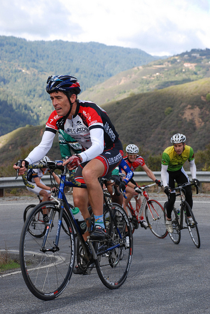

|
 |
 |
|  |
| Rich Hill leads a group around one of Soda Springs Road's scenic corners (Thomas Preisler) |
It was a cool but crystal-clear morning for Low-Key Hillclimbs' return to what is one of the Bay Area's best climbs, Soda Springs Road. It combines sustained grades, gorgeous views, low car traffic, and an excellent road surface. We are truly blessed to have access to such roads.
Soda Springs Road is unyieldingly restricted access above its gate, so the public road gets is local traffic only. This creates a wonderfully peaceful environment that those of us living in cities or suburbs so rarely experience. As a result, there was some concern about Low-Key visiting this residential road. But coordinator Barry Burr did a great job explaining the Low-Key philosophy, that our riders would wait if there was two-way car traffic, and I think a good mutual understanding was reached. Donuts and coffee were shared at the finish as some local residents came out to cheer on the riders. This was our fourth visit to Soda Springs Road, and I'm grateful for every one of them.
Hybrid-electric rider Bill Bushnell was back after a week away and led the Low-Key crew up the hill, finishing in a typically outstanding time of 19:19. Bill's been fantastic help in this series, as he always helps as he can at the finish after he arrives, for example with his excellent photography.
Next to arrive were the top men's finishers. And this week was the most promenant example yet of junior dominance. Adrien Costa blew away Tracy Colwell's standing 30:02 course record with a sizzling time of 28:15 before virtually collapsing, exhausted, at the gate. He was followed by teammate Zeke Mostov, who also finished ahead of that course record in 29:51. Third was another junior, Tim Aiken, who had finished second to Adrien at Montebello. After these three, it was time for the long-timers, with Tracy coming in just ahead of series leader Clark Foy, followed 13 seconds later by Carl Nielson.
In the women's competition, it was once again Lisa Penzel. She shattered Laura Stern's long-standing Low-Key course record with her time of 36:47 to maintain her record of perfection in the 2012 series. 2012 Para-olympics multi-medalist Kelly Crowley, getting in some off-season fun, was second in 38:55, with Leah "LT" Brown in a close third.
Finishing just behind Kelly was Low-Key's dominant runner, Gary "the" Gellin. Gary, clearly recovered from his recent Tahoe Rim Trail record attempt, came crossed the line in 38:59. That's 7:17 miles (4:31 kms). Gary has the supernatural power that hills, even including Soda Spring's 8.5% sustained grade, barely slow him down.
Dan and Winnie Brehmer led the tandem division this week, finishing in an impressive 46:24.
Super-thanks to coordinator Barry and all of our volunteers this week!
P.S.: Jonas Kellner (43:26) arrived late at the start. His Strava time was 40:10.
Strava T-shirt qualifiers indicated with orange background. Note riders can only qualify once per series, so may not be listed even if they beat the target time for this week.
| pl | # | name | team | cat | time | mph | fph | score |
|---|---|---|---|---|---|---|---|---|
| 1 | 129 | Lisa Penzel | The Brown Zone | 45+ | 36:47 | 8.73 | 3863 | 125.94 |
| 2 | 606 | Kelly Crowley | Team Kelly | 38:55 | 8.25 | 3651 | 119.31 | |
| 3 | 604 | LT Brown | The Brown Zone | 39:18 | 8.17 | 3615 | 118.19 | |
| 4 | 113 | Ginger Kroft | Western Wheelers | 40+ | 41:07 | 7.81 | 3456 | 113.18 |
| 5 | 305 | Amy Cameron | Sr's & Mr's of No Mercy | 30+ | 41:10 | 7.80 | 3451 | 113.05 |
| 6 | 625 | Melanie Wong | Berkeley Bike Club | 25+ | 42:07 | 7.62 | 3373 | 110.60 |
| 7 | 215 | Laura Hipp | Western Wheelers | 4 | 43:07 | 7.44 | 3295 | 108.14 |
| 8 | 8 | Janet Martinez | Sr's & Mr's of No Mercy | 43:32 | 7.37 | 3264 | 107.15 | |
| 9 | 403 | Roxy Brown | The Brown Zone | 40+ | 44:02 | 7.29 | 3227 | 105.98 |
| 10 | 79 | Lisa Emmerich | Sr's & Mr's of No Mercy | 50+ | 46:21 | 6.93 | 3065 | 100.90 |
| 11 | 422 | Sandra King | Team Fremont FFBC p/b Chipotle | 40+ | 48:20 | 6.64 | 2940 | 96.93 |
| 12 | 91 | Hannah Hausman | Hausbert | 20+ | 49:53 | 6.44 | 2848 | 94.04 |
| 13 | 514 | Magdalena Novotna | El Camino Tri Club | 40+ | 54:45 | 5.86 | 2595 | 86.01 |
| 14 | 50 | Alison Chaiken | Sr's & Mr's of No Mercy | 50+ | 58:45 | 5.46 | 2418 | 80.39 |
| 15 | 94 | Christine Holmes | Low-Key | 45+ | 60:15 | 5.33 | 2358 | 78.47 |
| 16 | 312 | Andrea Ivan | Silicon Valley Triathlon | 62:15 | 5.16 | 2282 | 76.05 |
reference time for division Women = 46:47
| pl | # | name | team | cat | time | mph | fph | score |
|---|---|---|---|---|---|---|---|---|
| 1 | 69 | Adrien Costa | Slipstream-Craddock Jr. Development | Junior | 28:15 | 11.36 | 5029 | 135.51 |
| 2 | 615 | Zeke Mostov | Slipstream-Craddock Jr. Development | Junior | 29:51 | 10.75 | 4760 | 128.54 |
| 3 | 22 | Tim Aiken | Bear Development Team | 17-18 | 30:21 | 10.58 | 4681 | 126.51 |
| 4 | 64 | Tracy Colwell | Team Colwell | 40+ | 30:26 | 10.55 | 4669 | 126.17 |
| 5 | 212 | Clark Foy | Western Wheelers | 45+ | 30:29 | 10.53 | 4661 | 125.98 |
| 6 | 230 | Carl Nielson | Sr's & Mr's of No Mercy | 50+ | 30:42 | 10.46 | 4628 | 125.12 |
| 7 | 131 | Josh Pizzica | Gene-Solve/Etxea | 35+ | 31:23 | 10.23 | 4527 | 122.51 |
| 8 | 56 | Tim Clark | Low-Key | 45+ | 31:29 | 10.20 | 4513 | 122.14 |
| 9 | 59 | David Collet | 40+ | 31:56 | 10.05 | 4449 | 120.49 | |
| 10 | 38 | Rich Brown | The Brown Zone | 35+ | 32:09 | 9.98 | 4419 | 119.71 |
| 11 | 71 | Robby Cuthbert | Hausbert | 20+ | 32:13 | 9.96 | 4410 | 119.47 |
| 12 | 149 | Daryl Spano | San Jose Bike Club | 45+ | 32:18 | 9.94 | 4399 | 119.17 |
| 13 | 44 | Ciaran Byrne | Sr's & Mr's of No Mercy | 40+ | 32:22 | 9.92 | 4390 | 118.94 |
| 14 | 112 | Alex Kramer | Western Wheelers | 35+ | 32:22 | 9.92 | 4390 | 118.94 |
| 15 | 413 | Mark Edwards | Bike Trip/Symantec | 50+ | 32:31 | 9.87 | 4369 | 118.41 |
| 16 | 172 | Morgan Raines | Bike Trip/Symantec | 40+ | 32:42 | 9.82 | 4345 | 117.78 |
| 17 | 1 | Daniel Connelly | Low-Key | 3 | 33:16 | 9.65 | 4271 | 115.85 |
| 18 | 95 | Jared Hudson | SquadraSF | 30+ | 33:19 | 9.63 | 4265 | 115.69 |
| 19 | 92 | Rich Hill | LGBRC | 45+ | 33:26 | 9.60 | 4250 | 115.30 |
| 20 | 319 | Brian Schuster | Dolce Vita Cycling | 25+ | 33:29 | 9.59 | 4243 | 115.13 |
| 21 | 231 | Travis Retzer | Eden Bicycles | 4 | 33:40 | 9.53 | 4220 | 114.53 |
| 22 | 239 | Dennis Van Hoof | Type 1 Diabetes | 35+ | 33:43 | 9.52 | 4214 | 114.37 |
| 23 | 412 | Rob Easley | Sr's & Mr's of No Mercy | 45+ | 33:46 | 9.51 | 4208 | 114.21 |
| 24 | 155 | Joseph Sullivan | San Jose Bike Club | 35+ | 34:02 | 9.43 | 4175 | 113.35 |
| 25 | 411 | Geoff Drake | Bike Trip/Symantec | 50+ | 34:05 | 9.42 | 4169 | 113.19 |
| 26 | 416 | David Gonzales | 35+ | 34:07 | 9.41 | 4165 | 113.08 | |
| 27 | 7 | James Porter | Western Wheelers | 3 | 34:17 | 9.36 | 4144 | 112.56 |
| 28 | 623 | Nigel White | Sherwood CC | 50+ | 34:22 | 9.34 | 4134 | 112.29 |
| 29 | 443 | H Two Brown | The Brown Zone | 50- | 34:25 | 9.33 | 4128 | 112.14 |
| 30 | 70 | Andy Crews | Diablo | 40+ | 34:28 | 9.31 | 4122 | 111.98 |
| 31 | 434 | Stefano Profumo | Bike Trip/Symantec | 30+ | 34:28 | 9.31 | 4122 | 111.98 |
| 32 | 162 | Ben Weir | Western Wheelers | 30+ | 34:49 | 9.22 | 4081 | 110.90 |
| 33 | 502 | Jamy Bacchus | Berkeley Bike Club | 40+ | 35:13 | 9.12 | 4034 | 109.69 |
| 34 | 151 | Tom Stanis | 35+ | 35:25 | 9.06 | 4012 | 109.10 | |
| 35 | 609 | Roland Freund | Davis Bike Club | 55+ | 35:41 | 9.00 | 3982 | 108.32 |
| 36 | 421 | Mark King | IC3 Hammer Nutrition | 45+ | 35:49 | 8.96 | 3967 | 107.93 |
| 37 | 97 | Martin Hyland | Western Wheelers | 55+ | 36:00 | 8.92 | 3947 | 107.41 |
| 38 | 621 | Jason Thompson | The Brown Zone | Hors | 36:05 | 8.90 | 3938 | 107.17 |
| 39 | 607 | Benjamin Dorfan | Unattached | 5 | 36:11 | 8.87 | 3927 | 106.88 |
| 40 | 608 | Klaus Fleischmann | 40* | 36:14 | 8.86 | 3921 | 106.74 | |
| 41 | 618 | Ken Sato | Bike Trip/Symantec | 45+ | 36:30 | 8.79 | 3893 | 105.99 |
| 42 | 142 | Naoto Sato | 45+ | 36:35 | 8.77 | 3884 | 105.76 | |
| 43 | 78 | Bill Dvorak | 55+ | 36:39 | 8.76 | 3877 | 105.58 | |
| 44 | 175 | Alexander Komlik | San Jose Bike Club | 45+ | 36:40 | 8.75 | 3875 | 105.53 |
| 45 | 315 | Chris Mickelsen | Western Wheelers | 55+ | 36:44 | 8.74 | 3868 | 105.35 |
| 46 | 246 | Chris Kovacs | Eden Bicycles | 35+ | 37:00 | 8.68 | 3840 | 104.62 |
| 47 | 118 | Justin Lucke | LGBRC | Plant Based | 37:03 | 8.66 | 3835 | 104.49 |
| 48 | 308 | Paul Diac | 25+ | 37:09 | 8.64 | 3824 | 104.22 | |
| 49 | 145 | Takanobu Seimiya | Nikon Cycling Club | 40+ | 37:19 | 8.60 | 3807 | 103.77 |
| 50 | 612 | Brian Johnston | JahWind | 50+ | 37:36 | 8.54 | 3779 | 103.02 |
| 51 | 614 | Miro Miklos | 30+ | 37:44 | 8.51 | 3765 | 102.67 | |
| 52 | 73 | J.D. Daniels | Eden Bicycles | 35+ | 37:52 | 8.48 | 3752 | 102.32 |
| 53 | 624 | Matt Wocasek | Bike Trip/Symantec | 45+ | 37:54 | 8.47 | 3749 | 102.24 |
| 54 | 616 | Bruce Pauly | Sr's & Mr's of No Mercy | 50+ | 37:55 | 8.47 | 3747 | 102.19 |
| 55 | 104 | Anthony Jawad | 25+ | 38:07 | 8.42 | 3728 | 101.68 | |
| 56 | 205 | Crist Clark | Webcor/Alto Velo | 40+ | 38:09 | 8.41 | 3724 | 101.59 |
| 57 | 156 | Toshi Tajima | 45+ | 38:16 | 8.39 | 3713 | 101.30 | |
| 58 | 35 | Blue Brown | The Brown Zone | Meat Based | 38:29 | 8.34 | 3692 | 100.75 |
| 59 | 427 | Scott Martin | Bike Trip/Symantec | 55+ | 38:34 | 8.32 | 3684 | 100.54 |
| 60 | 777 | Brendon Gibson | 30+ | 38:39 | 8.31 | 3676 | 100.33 | |
| 61 | 130 | Jim Perreira | 45+ | 38:51 | 8.26 | 3657 | 99.84 | |
| 62 | 620 | Steve Shores | Berkeley Bike Club | 40+ | 39:02 | 8.22 | 3640 | 99.39 |
| 63 | 511 | Jay Kilby | Elkhorn Creek Racing | 45+ | 39:09 | 8.20 | 3629 | 99.11 |
| 64 | 161 | Alan Weatherall | San Jose Bike Club | 50+ | 39:34 | 8.11 | 3591 | 98.10 |
| 65 | 424 | Jim Langley | Bike Trip/Symantec | 55+ | 39:44 | 8.08 | 3576 | 97.71 |
| 66 | 208 | Mike Davis | LGBRC | 45+ | 39:58 | 8.03 | 3555 | 97.16 |
| 67 | 218 | Terrance Kloeckl | 50+ | 40:08 | 8.00 | 3540 | 96.78 | |
| 68 | 611 | Neal Herman | Spike the Wonder Dog | 55+ | 40:16 | 7.97 | 3528 | 96.47 |
| 69 | 240 | David Vrane | Sr's & Mr's of No Mercy | 45+ | 40:38 | 7.90 | 3497 | 95.63 |
| 70 | 110 | Franz Kelsch | Pan y Agua | 65 Almost | 40:50 | 7.86 | 3480 | 95.18 |
| 71 | 401 | Nick Bellomo | Type 1 Diabetes | 30+ | 40:56 | 7.84 | 3471 | 94.96 |
| 72 | 99 | Peter Ingram | Ind. | 55+ | 41:19 | 7.77 | 3439 | 94.12 |
| 73 | 75 | Giles Douglas | 35+ | 41:29 | 7.74 | 3425 | 93.75 | |
| 74 | 619 | Bob Scott | 40+ | 41:42 | 7.70 | 3407 | 93.29 | |
| 75 | 147 | Jeff Shute | 30+ | 41:43 | 7.69 | 3406 | 93.25 | |
| 76 | 77 | Frank Drobot | Western Wheelers | 60+ | 41:45 | 7.69 | 3403 | 93.18 |
| 77 | 45 | Pat Callahan | Quadzilla Racing | 40+ | 41:47 | 7.68 | 3400 | 93.11 |
| 78 | 159 | Plamen Velikov | SLACer | 41:57 | 7.65 | 3387 | 92.75 | |
| 79 | 442 | Matt Wittmann | 25+ | 42:00 | 7.64 | 3383 | 92.65 | |
| 80 | 100 | Tim Irvine | LGBRC | 40+ | 42:15 | 7.60 | 3363 | 92.12 |
| 81 | 300 | MichaelsJ. Andalora | Bike Trip/Symantec | 60+ | 42:28 | 7.56 | 3346 | 91.67 |
| 82 | 141 | Nico Sallembien | Silicon Valley Triathlon | 35+ | 42:46 | 7.51 | 3322 | 91.06 |
| 83 | 626 | Larry Klein | GOM | 50+ | 43:04 | 7.45 | 3299 | 90.45 |
| 84 | 135 | Mihai R. | 30+ | 43:20 | 7.41 | 3279 | 89.91 | |
| 85 | 510 | Jonas Kellner | 35+ | 43:26 | 7.39 | 3271 | 89.72L | |
| 86 | 58 | Kevin Colagiovanni | Team DUD | 25+ | 43:54 | 7.31 | 3236 | 88.80 |
| 87 | 83 | Dave Fitch | Pan y Agua | 70+ | 44:20 | 7.24 | 3205 | 87.97 |
| 88 | 143 | Wink Saville | 60+ | 44:22 | 7.24 | 3202 | 87.90 | |
| 89 | 76 | Pierre Doussiere | My LowRacer and myself | 50+ | 45:00 | 7.13 | 3157 | 86.72 |
| 90 | 169 | Nic Brummell | Atlas | 50+ | 45:14 | 7.10 | 3141 | 86.29 |
| 91 | 127 | Bart Niechwiej | 35+ | 45:19 | 7.08 | 3135 | 86.14 | |
| 92 | 84 | Stephen Fong | CyclePath Racing | 45+ | 45:36 | 7.04 | 3116 | 85.62 |
| 93 | 67 | Richard Contreras | Team Rhus | 55+ | 45:43 | 7.02 | 3108 | 85.41 |
| 94 | 602 | Chris Baker | Bike Trip/Symantec | 45+ | 45:49 | 7.01 | 3101 | 85.24 |
| 95 | 102 | Tom Jakaby | Buycell/Jakaby Engineering | 50+ | 45:51 | 7.00 | 3099 | 85.18 |
| 96 | 437 | Eddie Santos | 25+ | 46:51 | 6.85 | 3033 | 83.43 | |
| 97 | 206 | Jay Cohan | Spike the Wonder Dog | 45+ | 46:55 | 6.84 | 3028 | 83.32 |
| 98 | 174 | Norbert Kappel | San Jose Bike Club | 55+ | 47:10 | 6.81 | 3012 | 82.90 |
| 99 | 431 | Edward Miller | SLACer | 70+ | 47:10 | 6.81 | 3012 | 82.90 |
| 100 | 441 | Han Wen | GOM | 40+ | 48:17 | 6.65 | 2943 | 81.06 |
| 101 | 603 | John Bono | SCCCC | 40+ | 50:04 | 6.41 | 2838 | 78.29 |
| 102 | 430 | Kris McQueen | Diablo | 35+ | 51:16 | 6.26 | 2771 | 76.53 |
| 103 | 605 | Bob Corman | 55+ | 54:48 | 5.86 | 2593 | 71.79 |
reference time for division Men = 38:47
| pl | # | name | team | cat | time | mph | fph | score |
|---|---|---|---|---|---|---|---|---|
| 1 | 32 | Dan Brehmer | SLACer | 45+ | 46:24 | 6.92 | 3062 | 92.50 |
| 33 | Winnie Lam Brehmer | SLACer | Stoker |
| pl | # | name | team | cat | time | mph | fph | score |
|---|---|---|---|---|---|---|---|---|
| 1 | 6 | Bill Bushnell | Low-Key | It's Mostly The Bike | 19:19 | 16.62 | 7355 | 115.93 |
reference time for division Hybrid Electric = 22:32
| pl | # | name | team | cat | time | mph | fph | score |
|---|---|---|---|---|---|---|---|---|
| 1 | 610 | Gary Gellin | Sr's & Mr's of No Mercy | 40+ | 38:59 | 8.23 | 3645 | 99.51 |
reference time for division Male Runner = 38:47
| pl | team | score | riders |
|---|---|---|---|
| 1 | The Brown Zone | 363.84 | Rich Brown, H Two Brown, Jason Thompson, Lisa Penzel, Blue Brown, LT Brown, Roxy Brown |
| 2 | Sr's & Mr's of No Mercy | 358.27 | Carl Nielson, Ciaran Byrne, Rob Easley, Bruce Pauly, Gary Gellin, David Vrane, Amy Cameron, Janet Martinez, Lisa Emmerich, Alison Chaiken |
| 3 | Western Wheelers | 358.10 | Clark Foy, Alex Kramer, James Porter, Ben Weir, Martin Hyland, Chris Mickelsen, Ginger Kroft, Frank Drobot, Laura Hipp |
| 4 | Low-Key | 353.92 | Bill Bushnell, Tim Clark, Daniel Connelly, Christine Holmes |
| 5 | Bike Trip/Symantec | 349.38 | Mark Edwards, Morgan Raines, Geoff Drake, Stefano Profumo, Ken Sato, Matt Wocasek, Scott Martin, Jim Langley, MichaelsJ. Andalora, Chris Baker |
| 6 | San Jose Bike Club | 338.06 | Daryl Spano, Joseph Sullivan, Alexander Komlik, Alan Weatherall, Norbert Kappel |
| 7 | Eden Bicycles | 321.48 | Travis Retzer, Chris Kovacs, J.D. Daniels |
| 8 | Berkeley Bike Club | 319.69 | Jamy Bacchus, Steve Shores, Melanie Wong |
| 9 | LGBRC | 316.95 | Rich Hill, Justin Lucke, Mike Davis, Tim Irvine |
| 10 | 312.08 | Tom Stanis, Anthony Jawad, Toshi Tajima, Giles Douglas, Jeff Shute, Mihai R., Wink Saville, Bart Niechwiej | |
| 11 | SLACer | 277.76 | Plamen Velikov, Dan Brehmer, Winnie Lam Brehmer, Edward Miller |
| 12 | Slipstream-Craddock Jr. Development | 264.05 | Adrien Costa, Zeke Mostov |
| 13 | Hausbert | 213.51 | Robby Cuthbert, Hannah Hausman |
| 14 | Type 1 Diabetes | 209.33 | Dennis Van Hoof, Nick Bellomo |
| 15 | Diablo | 188.51 | Andy Crews, Kris McQueen |
| 16 | Pan y Agua | 183.15 | Franz Kelsch, Dave Fitch |
| 17 | Spike the Wonder Dog | 179.79 | Neal Herman, Jay Cohan |
| 18 | GOM | 171.50 | Larry Klein, Han Wen |
| 19 | Silicon Valley Triathlon | 167.10 | Nico Sallembien, Andrea Ivan |
| 20 | Bear Development Team | 126.51 | Tim Aiken |
| 21 | Team Colwell | 126.17 | Tracy Colwell |
| 22 | Gene-Solve/Etxea | 122.51 | Josh Pizzica |
| 23 | Team Kelly | 119.31 | Kelly Crowley |
| 24 | SquadraSF | 115.69 | Jared Hudson |
| 25 | Dolce Vita Cycling | 115.13 | Brian Schuster |
| 26 | Sherwood CC | 112.29 | Nigel White |
| 27 | Davis Bike Club | 108.32 | Roland Freund |
| 28 | IC3 Hammer Nutrition | 107.93 | Mark King |
| 29 | Unattached | 106.88 | Benjamin Dorfan |
| 30 | Nikon Cycling Club | 103.77 | Takanobu Seimiya |
| 31 | JahWind | 103.02 | Brian Johnston |
| 32 | Webcor/Alto Velo | 101.59 | Crist Clark |
| 33 | Elkhorn Creek Racing | 99.11 | Jay Kilby |
| 34 | Team Fremont FFBC p/b Chipotle | 96.93 | Sandra King |
| 35 | Ind. | 94.12 | Peter Ingram |
| 36 | Quadzilla Racing | 93.11 | Pat Callahan |
| 37 | Team DUD | 88.80 | Kevin Colagiovanni |
| 38 | My LowRacer and myself | 86.72 | Pierre Doussiere |
| 39 | Atlas | 86.29 | Nic Brummell |
| 40 | El Camino Tri Club | 86.01 | Magdalena Novotna |
| 41 | CyclePath Racing | 85.62 | Stephen Fong |
| 42 | Team Rhus | 85.41 | Richard Contreras |
| 43 | Buycell/Jakaby Engineering | 85.18 | Tom Jakaby |
| 44 | SCCCC | 78.29 | John Bono |